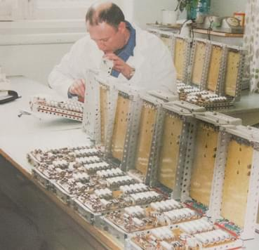
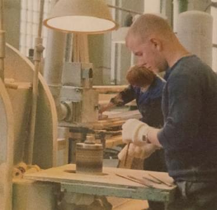
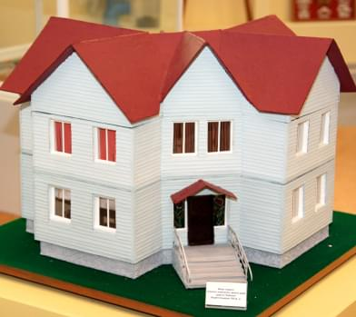

История
АО «Северный Рейд» образовано путем слияния производственных мощностей и научного потенциала ФГУП «Северный Рейд» (год образования — 1988) и ФГУП «Завод «Полярная звезда» (год образования — 1983). Это современное предприятие оборонно-промышленного комплекса России, обладающее высоким научным и производственным потенциалом. Один из лидеров в производстве гидроакустики, ремонте и модернизации навигационных комплексов и систем автоматики кораблей ВМФ.
С 2012 года предприятие входит в состав концерна «Океанприбор» и занимает важный сегмент в области строительства, модернизации и поддержания боеготовности кораблей Военно-морского флота Российской Федерации.
Текущая деятельность АО «Северный Рейд» представляет процесс производства и ремонта продукции приборостроения для нужд верфей судостроительной и судоремонтной отраслей с использованием традиционных технологий.
В настоящее время предприятие расширило сферу своих интересов и выполняет работы по изготовлению и ремонту как средств гидроакустики, так и навигации, автоматики, водно-химических лабораторий приборного типа, систем управления защиты реакторов, пультов управления систем регенерации воздуха и других радиоэлектронных средств на заказы ОАО «ПО «Севмаш», ОАО «ЦС «Звездочка», ведет разработку ремонтной документации, успешно проводит работы по модернизации средств гидроакустики, навигации, автоматики в качестве головного исполнителя работ.
ФГУП ЗАВОД «ПОЛЯРНАЯ ЗВЕЗДА»
05 сентября 1974 года. В соответствии с Постановлением Совета Министров СССР и КЦ КПСС № 726-237 и Приказом Министра судостроительной промышленности от 14.07.1979 № 331 начато строительство приборостроительного завода.
Декабрь 1983 года. Начало производственной деятельности предприятия.
1984 год. Освоен выпуск первых приборов военного заказа изделия «Скат».
1986 год. Завод вышел на проектную мощность. Начаты работы по изделию «Пеламида». Успешно сдан основной заказ – гидроакустическая станция МГ-541.
1987 год. Сдан первый комплект прибора 1 гидроакустической системы МГ-519.
1988 год. Изготовлен первый комплект изделий МГ-53.
1990 год. Сдан гидроакустический комплекс «Скат-3» (МГК-540), изготовлены первые конструкции из титановых сплавов для изделия МГА-21, «Иртыш-Амфора».
1992 год. Началась конверсия военного производства из-за резкого сокращения объемов гособоронзаказа.
1997 год. Начат выпуск первых комплектов пультов системы управления электрохимической регенерации воздуха АПЛ.
ФГУП «СЕВЕРНЫЙ РЕЙД»
22 февраля 1988 года. Приказом Министерства судостроительной промышленности № 59 в развитие Решения Совета Министров РСФСР от 26 мая 1978 года № С-421 в г. Северодвинске образовано «Северное специализированное комплексно-наладочное предприятие «Рейд», которое вошло в состав ЛПО «Равенство» (г. Ленинград).
Производство 18 октября 1989 года. Решением Министра судостроительной промышленности № ПГ 21/5223 в составе ССКНП «Рейд» создано специальное конструкторско-технологическое бюро (СКТБ).
29 марта 1990 года. На основании Приказа Министерства судостроительной промышленности № 52/с ССКНП «Рейд» вышло из состава ЛПО «Равенство» и вошло в состав в НПО «Аврора» как МГП «Рейд».
29 марта 1990 года. На основании Приказа Министерства судостроительной промышленности № 52/с ССКНП «Рейд» вышло из состава ЛПО «Равенство» и вошло в состав в НПО «Аврора» как МГП «Рейд».
30 апреля 1991 года. Приказом Министерства судостроительной промышленности № 191 МГП «Рейд» преобразован в МГП «Северный Рейд» в составе НПО «Аврора».
01 июля 1992 года. МГП «Северный Рейд» выделилось из состава НПО «Аврора» на основании Указа Президента РФ № 721.
1992 год. «Северный Рейд» единственный в Архангельской области и в отрасли начал строительство собственной производственной базы в г. Северодвинске.
Сентябрь 1992 года. МГП «Северный Рейд» определен основным исполнителем работ по ремонту СУ ТС «Титан-Д».
22 января 1993 года. Постановлением мэрии г. Северодвинска № 3-59 МГП «Северный Рейд» переименовано в ГП «Северный Рейд».
Февраль 1993 года. На предприятии образовано ремонтное регулировочно-сдаточное производство.
Март 1993 года. Силами предприятия совместно с АО «Экон» выполнена опытная утилизация носового и кормового блоков ПЛА.
Апрель 1993 года. Начато фирменное техническое обслуживание и ремонт материальной части АПЛ отстоя. В сфере основной деятельности предприятия выделено направление по ремонту материальной части ПЛА отстоя. «Северный Рейд» обеспечивает ремонт материальной части систем живучести шести ПЛА Беломорской военно-морской базы.
1993-1995 годы. Предприятие первым в г. Северодвинске выполнило работы по утилизации АПЛ по гособоронзаказу.
Деревообрабатывающее производство 1994 год. ГП «Северный Рейд» получило полную хозяйственную самостоятельность. Завершен ремонт и передача в эксплуатацию СУ ТС «Титан-Д», начато освоение ремонта навигационных комплексов. СКБТ разрабатывает проектную и конструкторскую документацию на оборудование стендов СУ ТС и СУЗ на собственных площадях.
15 марта 1994 года. Решением руководства ВМФ и Правительства РФ № 714/13/647 определена роль ГП «Северный Рейд» как головного предприятия в отрасли выполнения ремонта, шефмонтажа, регулировке и сдаче систем автоматики и навигации на заказах всех проектов, проходящих ремонт на ФГУП «МП «Звездочка».
1995 год. В период экономического спада при резком сокращении объемов гособоронзаказа одним из перспективных направлений был признан ремонт навигационных комплексов АПЛ, для чего созданы уникальные стенды, приобретена и смонтирована технологическая оснастка, подготовлены и аттестованы специалисты, введены основные принципы управления качеством продукции.
Май 1995 года. Образовано деревообрабатывающее производство, на котором в 2002 году внедрена технология экологически чистой глубокой пропитки древесины, повышающей ее прочность и долговечность.
Сентябрь 1995 года. В связи с освоением ремонта навигационных комплексов в составе ОП-1 появляется производство № 1 (ремонт систем навигации) и производство № 5 (ремонт систем автоматики, сервисное обслуживание систем в местах базирования заказов).
"Соловецкий Кремль" Октябрь 1995 года. В рамках конверсии положено начало опытной эксплуатации стекольного производства предприятия, образованного в апреле 1996 года. Его профиль – изготовление сувенирной стеклянной тары для ликероводочной продукции. Первым в России «Северный Рейд» стал выпускать сувенирные штофы с декоративными колпачками и ручной росписью, а также наборы на деревянных подиумах.
Ноябрь 1995 года. ГП «Северный Рейд» определен головным исполнителем работ по обеспечению надводной непотопляемости и живучести ПЛА отстоя Северного флота.
1996 год. Положено начало созданию лабораторий и стендового оборудования для проведения различных видов испытаний модулей, блоков, приборов, комплексов и другой продукции различного назначения.
В дальнейшем это позволило проводить гарантийный и поддерживающий ремонты с модернизацией и доработками, продлевать назначенные показатели ресурса и сроки службы, проводить средний ремонт с заменой элементной базы и продлением сроков службы. ГП «Северный Рейд» утилизирует ПЛ «Бастион».
29 мая 1998 года. Приказом Минэкономики РФ ГП «Северный Рейд» переименован в ГУП «Северный Рейд».
1998 год. Предприятием начаты работы для нужд ВМФ по обеспечению плавучести во время отстоя АПЛ, выведенных из состава флота и подлежащих утилизации. Для решения этой задачи было освоено изготовление передвижных модульных систем подачи воздуха высокого давления двух типов: мобильные компрессионные станции высокого давления и транспортабельные дизель-компрессионные модули, а также передвижные санпропускники, предназначенные для дозиметрического контроля и санитарной обработки персонала, задействованного при работе с радиоактивными материалами. Специалисты «Северного Рейда» совместно с ВМФ и предприятием «Экопол» при ЦКБ МТ «Рубин» разработали уникальную технологию предотвращения затопления списанных АПЛ с помощью вспененного полистирола. Создаваемая таким образом «воздушная» подушка обеспечивает плавучесть субмарины в ожидании утилизации в течение 10 лет.
1999 год. В целях совершенствования структуры управления предприятия образованы основное производство № 1, занимающееся ремонтом РЭВ АПЛ, и основное производство № 2, выполняющее работы по поддержанию на плаву находящихся в длительном отстое утилизируемых АПЛ. В дальнейшем в связи с реорганизацией структуры предприятия ОП-2 преобразовано в производство опытно-экспериментальное и продукции гражданского назначения, основным видом деятельности которого стал выпуск гражданской продукции и товаров народного потребления.
2000 год. На производственных площадях ФГУП «ПО «Севмаш» оборудован стенд по ремонту составной части НК «Шлюз». Начаты работы по восстановлению технической готовности водо-химических лабораторий. Разработана конструкторская документация на стенд получения воды высокой очистки.
12 июля 2001 год. Распоряжением Российского Агентства по судостроению № 100 ГУП «Северный Рейд» переименовано во ФГУП «Северный Рейд».
2001 год. По распоряжению генерального директора предприятия строительная группа «Северного Рейда» преобразована в ремонтно-строительное производство.
2002 год. Разработана ремонтная документация на статический преобразователь состава НК «Шлюз». Оборудована и сдана в эксплуатацию лаборатория навигации.
2003 год. ФГУП «Северный Рейд» определен головным исполнителем по ремонту навигационных комплексов на заказах, проходящих ремонт на ФГУП «МП «Звездочка».
ОБЪЕДИНЕНИЕ
2004 год. Решением Министерства имущественных отношений РФ от 27.02.2004 № 773-р ДСП, Приказом Российского Агентства по судостроению от 05.03.2004 № 27 и совместным Решением ВМФ РФ и Российским Агентством по судостроению от 05.03.2004 № 7 мобилизационные мощности ФГУП «Завод «Полярная звезда» переданы ФГУП «Северный Рейд». Одновременно осуществлен перевод персонала «Полярной Звезды» на «Северный Рейд». Это позволило сохранить уникальные технологии и высококвалифицированных специалистов, обеспечивающих выполнение работ, направленных на укрепление обороноспособности страны. На базе производственных мощностей «Полярной звезды» создано основное производство № 5. Направление деятельности нового производства – ремонт и изготовление ГАК и станций, пультов управления электрохимической регенерации воздуха, приборов, блоков, модулей. Деревообрабатывающее производство преобразовано в ОП № 3, стеклянное – в ОП № 4. Проведено освидетельствование и дефектация изделий ПТУ, «Онега», «Илекса» состава НК «Шлюз».
Октябрь 2004 года. Образовано домостроительное производство. В рамках программы «Доступное жилье» начат выпуск удобных малоэтажных домов по финской технологии.
Апрель 2005 года. СКБТ разрабатывает ремонтную документацию на средний ремонт НК «Шлюз», «Шлюз-1».
2005-2007 годы. Специалистами ОП-5 ФГУП «Северный Рейд» выполнены работы по ремонту и глубокой
2007 год. На базе ФГУП «Северный Рейд» создан Отраслевой центр по ремонту РЭА. Для оперативного проведения испытаний навигационных приборов принято решение о восстановлении испытательного стенда «Кречет-Ш». В результате выполненных работ «Северный Рейд» становится обладателем уникального по своим характеристикам стенда, не имеющего аналогов в России
2007 год. На базе ФГУП «Северный Рейд» создан Отраслевой центр по ремонту РЭА. Для оперативного проведения испытаний навигационных приборов принято решение о восстановлении испытательного стенда «Кречет-Ш». В результате выполненных работ «Северный Рейд» становится обладателем уникального по своим характеристикам стенда, не имеющего аналогов в России.
Апрель 2008 года. ФГУП «Северный Рейд» преобразовано в ОАО «Северный Рейд».
Апрель 2011 года. ОАО «Северный Рейд» признано победителем ежегодного городского конкурса по охране труда по итогам 2010 года.
Июнь 2011 года. В целях координации совместных действий, направленных на решение задач технического, профессионального и интеллектуального сотрудничества, использования инновационных методов утвержден двусторонний протокол намерений между ОАО «Северный Рейд» и ОАО «Концерн «Океанприбор».
Август 2011 года. ОАО «Северный Рейд» вошло в сотню лучших предприятий приборостроения России.
Декабрь 2012 года. В результате проведения операции по передаче прав собственности ОАО «Северный Рейд» вошел в состав ОАО «Концерн «Океанприбор». Это стало стратегическим шагом в процессе выхода предприятия из кризиса. Присоединение к концерну обеспечило «Северному Рейду» максимальную загрузку и стабильное развитие на долгие годы. Заключены контракты, уходящие за 2020 год, на изготовление ГАК для подлодок проектов «Борей и «Ясень», строящихся на Севмаше, и на «Барсы», которым предстоит модернизация на «Звездочке».
2012 год. Заключен контракт на изготовление приборов, модулей и блоков для изделия «Пеламида», составных частей изделия ЛА 55С.1 для АПЛ «Леопард». Выполнено восстановление технической готовности изделий для АПЛ «Смоленск». Проведено освидетельствование изделия МГ-519, НК «Шлюз», АК «Заря», «Титан» и других на АПЛ «Екатеринбург».
2013 год. Заключен контракт на проведение шефмонтажа и наладки НК «Шлюз-4». Выполнение работ по изделию «Скат», ремонт НК «Шлюз», изделий «Заря», «Бриг-М» и др., а также дефектация и ремонт прибора 1 для изделия «Арфа» на АПЛ «Екатеринбург». Подписан договор на изготовление составных частей изделия ЛА 55И.1 для АПЛ проекта «Ясень».
2013-2014 годы. Заключен контракт на изготовление составных частей изделия «Иртыш-Амфора-Б» для модернизированных кораблей проекта «Борей».
2014 год. Заключены контракты на ремонт «Ската» и других изделий на АПЛ «Орел», на изготовление приборов для изделия «Гнейс» и аппаратной части изделия «Олимп» для АПЛ проекта «Ясень», на поставку аппаратуры на изделие «Кижуч», на проведение ремонтно-сдаточных работ на изделии УСБЗ-М